텔레마케팅관리사 (2012-03-04 기출문제)
1과목: 판매관리
1. 다음 중 서비스(Service)의 특성이 아닌 것은?
- 무형성
- 분리성
- 소멸성
- 이질성
(정답률: 40%)

2. 고객서비스 지향적 인바운드 텔레마케팅 도입 시 점검사항과 가장 거리가 먼 것은?
- 소비자 상담창구 운영 능력
- 고객정보의 활용 수준
- 성과분석과 피드백
- 목표 고객의 리스트
(정답률: 52%)
3. 다음 중 소비자들이 필요로 하지만 해당 제품의 구입을 위해 많은 시간을 보내거나 노력을 경주할 의사가 없는 제품은?
- 편의품
- 선매품
- 전문품
- 비탐색품
(정답률: 78%)
4. 기업의 전략적 사업 단위를 분석하는데 이용되는 BCG(Boston Consulting Group) 모형에서 수직축은 무엇을 반영한 것인가?
- 희망투자 수익률
- 시장성장율
- 세분시장의 규모
- 상대적 시장점유율
(정답률: 58%)
5. 축적된 고객관련 데이터에 의미 있는 규칙이나 패턴을 찾아내는 것은?
- Information Searching
- Data Mining
- Data Filtering
- Information Rule
(정답률: 65%)
6. 아웃바운드 텔레마케팅의 성공요소가 아닌 것은?
- 부정확한 대상고객의 선정
- 고객의 니즈에 맞는 전용상품
- 판매이후의 신뢰성 확보와 사후관리
- 잘 정리되고 업그레이드된 데이터베이스
(정답률: 66%)
7. STP 전략의 절차를 바르게 나열한 것은?
- 시장세분화 → 표적시장 선정 → 포지셔닝
- 표적시장 선정 → 포지셔닝 → 시장세분화
- 포지셔닝 → 표적시장 선정 → 시장세분화
- 시장세분화 → 포지셔닝 → 표적시장 선정
(정답률: 68%)
8. 다음 ( ) 안에 공통으로 들어갈 알맞은 것은?
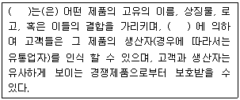
- 브랜드
- 패키지
- 품질
- 애프터서비스
(정답률: 70%)
9. 제품/시장 확장 그리드(Product/Market Expansion Grid)에 관한 설명으로 틀린 것은?
- 시장개발(Market Development)은 시장을 개발하여 기존제품을 판매하는 것이다.
- 시장침투(Market penetration)는 기존제품을 변경하여 기존고객에게 더 많이 판매하는 것이다.
- 제품개발(Product development)은 기존시장을 대상으로 수정된, 혹은 새로운 제품을 제공하는 것이다.
- 다각화(Diversification)는 기존제품과 기존시장 밖에서 새로운 사업을 시작하거나 매입하는 것이다.
(정답률: 40%)
10. 다음 중 시장세분화의 지리적 변수가 아닌 것은?
- 가족생활주기
- 거주지역
- 인구밀도
- 기후
(정답률: 70%)
11. 소비자가 구입하고자 하는 휴대전화를 아래와 같이 평가했을 때의 설명으로 옳은 것은?
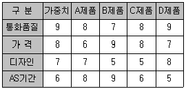
- 보완적 접근법으로 휴대전화를 선택하면 A제품을 선택하게 된다.
- 사전 편집식 접근법으로 휴대전화를 선택하면 B제품을 선택하게 된다.
- 보완적 접근법으로 휴대전화를 선택하면 C제품을 선택하게 된다.
- 사전 편집식 접근법으로 휴대전화를 선택하면 D제품을 선택하게 된다.
(정답률: 54%)
12. A대학교 인근에는 중국성, 가야성, 홍보석 등 다양한 중국음식점들이 있으며 모두 음식배달을 하고 있다. 이러한 상황에서 각 중국음식점들이 고려해야할 가격결정 방법으로 가장 적합한 것은?
- 수요를 토대로 한 가격책정
- 수익을 토대로 한 가격책정
- 경쟁을 토대로 한 가격책정
- 비용을 토대로 한 가격책정
(정답률: 74%)
13. 표적시장을 선택하기에 앞서 효과적인 시장세분화를 위해 충족되어야 하는 요건이 아닌 것은?
- 측정가능성
- 기대가능성
- 접근가능성
- 유지가능성
(정답률: 55%)
14. 기업의 환경분석을 통해 강점과 약점, 기회와 위협 요인을 규정하고 이를 토대로 마케팅 전략을 수립하는 기법은?
- 5 Force 분석
- 경쟁사 분석
- SWOT 분석
- 소비자 분석
(정답률: 82%)
15. 가격할인 형태 중 신 모델 구입 시 구 모델을 반환하면 그만큼 가격을 할인해 주는 방법은?
- 현금할인
- 수량할인
- 계절할인
- 공제
(정답률: 78%)
16. RFM 분석법의 평가요소에 해당하지 않는 것은?
- 최근구입여부
- 구입횟수
- 제품구입액의 정도
- 구입제품의 인지도
(정답률: 63%)
17. 포지셔닝 전략을 개발하기 위해서는 기본적으로 시장분석, 기업내부분석, 경쟁분석이 필요하다. 다음 중 경쟁분석 정보에 해당하는 것은?
- 시장점유율
- 기술상의 노하우
- 성장률
- 인적자원
(정답률: 48%)
18. 마케팅믹스(Marketing Mix)의 4P에 해당하지 않는 것은?
- 제품(Product)
- 가격(Price)
- 판매촉진(Promotion)
- 과정(Process)
(정답률: 80%)
19. 다음 중 데이터베이스 마케팅 활용 절차를 바르게 나열한 것은?
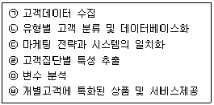
- (ㄱ) → (ㄴ) → (ㄷ) → (ㄹ) → (ㅁ) → (ㅂ)
- (ㄴ) → (ㄱ) → (ㄷ) → (ㅁ) → (ㄹ) → (ㅂ)
- (ㄷ) → (ㄴ) → (ㄱ) → (ㅂ) → (ㅁ) → (ㄹ)
- (ㄹ) → (ㄱ) → (ㄷ) → (ㄴ) → (ㅁ) → (ㅂ)
(정답률: 71%)
20. 아웃바운드 텔레마케팅의 활용분야가 아닌 것은?
- 가망고객 획득
- 직접 판매
- 반복구매 촉진
- 컴플레인 접수 처리
(정답률: 85%)
21. 소비자의 구매 의사결정 과정을 순서대로 바르게 나열한 것은?
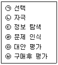
- (ㄴ) → (ㄹ) → (ㄷ) → (ㅁ) → (ㄱ) → (ㅂ)
- (ㄴ) → (ㄹ) → (ㄱ) → (ㅁ) → (ㄷ) → (ㅂ)
- (ㄹ) → (ㄴ) → (ㅁ) → (ㄷ) → (ㄱ) → (ㅂ)
- (ㄹ) → (ㄴ) → (ㄷ) → (ㅁ) → (ㄱ) → (ㅂ)
(정답률: 48%)
22. 2개 혹은 그 이상의 세분시장을 표적시장으로 선정하고 각각의 세분시장에 적합한 제품과 마케팅 프로그램을 개발하여 공급하는 전략은?
- 차별화 마케팅
- 집중화 마케팅
- 노이즈 마케팅
- 다이렉트 마케팅
(정답률: 65%)
23. 다음( )안에 알맞은 것은?
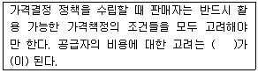
- 가격의 범위
- 원가경쟁
- 변동비
- 가격하한선
(정답률: 66%)
24. 인바운드 텔레마케팅에 관한 설명으로 옳지 않은 것은?
- 각종 광고활동의 결과로 외부(고객)로부터 걸려오는 전화를 받는 것으로 마케팅활동이 일어나는 것이다.
- 고객 데이터베이스에 의존하여 제품이나 서비스를 판매하고 가치를 설득시키는 적극적인 마케팅 기법이다.
- 고객이 전화를 거는 고객 주도형이기 때문에 판매나 주문으로 연결시키기가 비교적 용이하다.
- ARS시스템 또한 인바운드 텔레마케팅의 한 분야이다.
(정답률: 74%)
25. 소비자의 관여도가 낮고 브랜드 간 차이가 별로 나타나지 않은 상황에서 일어나는 구매행동은?
- 부조화 감소 구매행동
- 복잡성 구매행동
- 습관적 구매행동
- 다양성 추구 구매행동
(정답률: 70%)
2과목: 시장조사
26. 다음 중 관찰대상들이 가지고 있는 속성의 상대적 크기를 측정하여 대상 간에 서로 비교할 수 있도록 하는 척도는?
- 명목척도
- 서열척도
- 등간척도
- 비율척도
(정답률: 34%)
27. 조사 진행 과정 중 사전조사의 결과 활용으로 가장 적합한 것은?
- 발생할 가능성이 있는 문제점이 확인되었으면 본 조사를 진행해도 좋다.
- 문제점이 나타나면 현 단계에서 문제점을 수정하고 본 조사를 진행하면 된다.
- 문제점이 확인되면 앞의 단계로 돌아가 수정 후 본 조사를 진행하면 된다.
- 문제점이 나타나면 앞의 단계로 돌아가 수정 후 다시 사전조사의 과정을 반복한다.
(정답률: 52%)
28. 조사방법에 따라 1차 자료와 2차 자료로 구분할 때 2차 자료에 해당하는 것은?
- 신디케이트 자료(Syndicated Data)
- 실사자료(Survey Data)
- 원 자료(Raw Data)
- 현장자료(Field Data)
(정답률: 45%)
29. 다음과 같은 질문으로 얻은 측정치는 어떤 척도에 해당되는가?
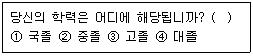
- 명목척도
- 서열척도
- 등간척도
- 비율척도
(정답률: 40%)
30. 효과적인 전화조사를 위한 커뮤니케이션 방법으로 적합하지 않은 것은?
- 질문에 대하여 효과적으로 답변할 수 있도록 조사자가 생각하는 답을 사전에 응답자에게 언급한다.
- 응답자가 질문내용을 명확하게 알아들을 수 있도록 해야 한다.
- 응답자를 후원하고 격려하여 응답자가 편안한 분위기에서 응답할 수 있도록 한다.
- 응답자의 대답을 반복하거나 복창하여 답변을 확인한다.
(정답률: 67%)
31. 다음은 어떤 유형의 응답 형태에 해당하는가?
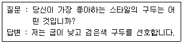
- 자유응답형
- 다지선다형
- 양자택일형
- ○ㆍ×형
(정답률: 62%)
32. 획득하고자 하는 정보의 내용을 결정한 이후 이루어져야 할 질문지 작성과정을 순서대로 바르게 나열한 것은?
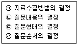
- (ㄱ) → (ㄴ) → (ㄷ) → (ㄹ)
- (ㄴ) → (ㄷ) → (ㄹ) → (ㄱ)
- (ㄷ) → (ㄱ) → (ㄴ) → (ㄹ)
- (ㄹ) → (ㄱ) → (ㄴ) → (ㄷ)
(정답률: 42%)
33. 측정한 자료의 적합성을 검증하는 두 가지 주요한 기준으로 옳은 것은?
- 타당성과 신뢰성
- 효율성과 효과성
- 타당성과 효율성
- 효과성과 신뢰성
(정답률: 67%)
34. 설문지작성을 위한 응답의 형태 중 응답의 항목들은 상호 배타적이고 모든 응답을 포괄할 수 있는 조건을 만족시키는 응답형태는?
- 자유응답형
- 다지선다형
- 양자택일형
- 문장완성형
(정답률: 50%)
35. 서스톤 척도(Theuston Scale)에 관한 설명으로 틀린 것은?
- 처음 문장을 분류하는 평가자들의 성격에 따라 분포가 달라질 수 있다.
- 절차가 다른 척도보다 단순하고 문장이나 평가자의 수가 적어도 된다.
- 척도용으로 선정된 문장들이 평균값은 같으나 분산도가 다를 수 있다.
- 응답자의 점수가 같더라도 그가 선택하는 문항의 종류와 내용이 다를 수 있다.
(정답률: 35%)
36. 다음 중 시장조사의 역할이 아닌 것은?
- 기업의 의사결정 질을 개선한다.
- 기업의 문제해결에 도움을 주는 정보를 제공한다.
- 마케팅을 효과적으로 수행할 수 있도록 도움을 준다.
- 소비자에 대한 경영자의 영향력을 증대시킨다.
(정답률: 12%)
37. 소비자욕구를 파악하기 위해 고객조사를 할 때 폐쇄형 질문이 적절한 경우는?
- 문제의 원인이나 배경에 대해 새로운 정보를 얻어야 할 경우에 사용한다.
- 편견 없이 가능한 한 다양하고 많은 정보를 모아야 할 경우에 사용한다.
- 여러 대안 중 소비자의 최종결정사항을 확인하고자 할 경우에 사용한다.
- 소비자들의 보편적인 사고방식에 대한 기존 정보가 없을 경우에 사용한다.
(정답률: 38%)
38. 설문지 작성시 질문의 순서를 결정하기 위한 일반적인 사항으로 옳지 않은 것은?
- 첫 번째 질문은 응답자의 부담감을 덜어줄 수 있도록 쉽고 재미있으며 응답자가 관심을 가질 수 있는 내용이면 좋다.
- 질문항목 간의 관계를 고려하여 마지막 질문에는 설문지의 내용이 어떤 것인지를 짐작하게 해주는 내용으로 구성한다.
- 응답자들은 일반적으로 인구통계학적인 질문(소득, 학력, 직업, 성별, 연령)에 대해 응답을 회피하므로, 가능한 설문지의 마지막 부분에 배치하는 것이 좋다.
- 갑작스러운 논리의 전환이 이루어지지 않도록 질문의 순서를 정하여야 한다.
(정답률: 60%)
39. 다음 중 자료처리를 위한 코딩(Coding)이 어려운 응답 형태는?
- 다지선택형
- 양자택일형
- 자유응답형
- 등급평가형
(정답률: 75%)
40. 다음 중 내적 타당도를 저해하는 요인이 아닌 것은?
- 특정사건의 영향
- 사전검사의 영향
- 조사대상자의 차별적 선정
- 반작용효과(Reactive Effects)
(정답률: 71%)
41. 다음 중 비확률표본추출방법에 해당하는 것은?
- 단순무작위표집(Simple Random Sampling)
- 층화표집(Stratified Sampling)
- 집락표집(Cluster Sampling)
- 유의표집(Purposive Sampling)
(정답률: 36%)
42. 다음 중 시장조사의 설계 과정을 순서대로 옳게 나열한 것은?
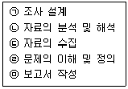
- (ㄱ) → (ㄴ) → (ㄷ) → (ㄹ) → (ㅁ)
- (ㄱ) → (ㄹ) → (ㄴ) → (ㄷ) → (ㅁ)
- (ㄹ) → (ㄷ) → (ㄱ) → (ㄴ) → (ㅁ)
- (ㄹ) → (ㄱ) → (ㄷ) → (ㄴ) → (ㅁ)
(정답률: 43%)
43. 대한민국에 거주하는 외국인을 대상으로 한 달에 지출되는 교육비에 대한 기초자료를 수집할 때 다양한 국적을 가진 사람과 비용 측면을 고려한다면 어떠한 조사방법이 가장 적합한가?
- 우편조사
- 면접조사
- 방문조사
- 관찰조사
(정답률: 67%)
44. 어떤 현상이나 변수의 원인이 무엇인가에 대한 해답, 즉 두 변수 간의 인관관계에 대한 해답을 얻기 위한 조사방법은?
- 분석법
- 관찰법
- 탐색법
- 실험법
(정답률: 55%)
45. 우편조사와 전화조사의 공통적인 장점으로 옳은 것은?
- 조사에 소요되는 시간이 짧다.
- 방대한 양의 자료를 수집할 수 있다.
- 복잡한 질문을 다룰 수 있다.
- 비교적 비용이 적게 든다.
(정답률: 74%)
46. 설문지를 구조적 설문지와 비구조적 설문지로 분류하는 기준으로 옳은 것은?
- 적용방법
- 피조사자의 이름을 밝히는 여부
- 질문구성형식
- 질문방법
(정답률: 54%)
47. 다음 ( ) 안에 들어갈 가장 알맞은 것은?
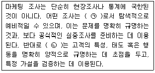
- (ㄱ) - 정성적 조사, (ㄴ) - 정량적 조사
- (ㄱ) - 정량적 조사, (ㄴ) - 정성적 조사
- (ㄱ) - 실증적 조사, (ㄴ) - 정량적 조사
- (ㄱ) - 정성적 조사, (ㄴ) - 분석적 조사
(정답률: 57%)
48. 측정의 신뢰성을 높이는 방법에 대한 설명으로 틀린 것은?
- 측정항목의 수를 줄인다.
- 측정항목의 모호성을 제거한다.
- 중요한 질문의 경우 동일하거나 유사한 질문을 2회 이상 한다.
- 조사대상자가 잘 모르거나 전혀 관심이 없는 내용은 측정 하지 않는다.
(정답률: 52%)
49. 우편조사의 회수율을 높이기 위한 노력과 효율적인 비용 측면에 대한 내용으로 거리가 가장 먼 것은?
- 예비조사를 통해 회수율을 사전예측하고 추가 계획을 수립한다.
- 설문지 발송 후 일정기간이 지나면 설문지와 반송봉투를 다시 발송한다.
- 응답된 설문지에 대해 각종 이벤트에 참석할 수 있도록 기회를 제공한다.
- 고객에게 우편을 보냄과 동시에 동일한 내용을 전화상으로 설명하여 고객의 이해를 돕는다.
(정답률: 37%)
50. 표집오차와 표본의 크기에 관한 설명으로 틀린 것은?
- 일반적으로 표본의 크기가 클수록 표집오차는 작아진다.
- 일반적으로 표본의 분산이 작을수록 표집오차는 작아진다.
- 층화표집에서는 표본의 크기가 같다고 했을 때 단순무작위표집에서보다 표집오차가 작아진다.
- 집락표집은 표본의 크기가 같을 때 단순무작위표집에서보다 표집오차가 작아진다.
(정답률: 24%)
3과목: 텔레마케팅관리
51. 콜센터의 생산성 향상을 저해하는 요소로 가장 거리가 먼 것은?
- 텔레마케터의 높은 이직률
- 시스템의 미비
- 스크립트 개발
- 콜센터 관리자의 지원 부족
(정답률: 67%)
52. 기존의 콜센터와 웹 콜센터의 차이점을 올바르게 설명한 것은?
- 기존의 콜센터는 PSTN(공중망)을 통하여 고객과 접촉하나 웹 콜센터는 IP를 통하여 고객과 접촉한다.
- 기존 콜센터에 비해 웹 콜센터는 고객 불만을 효과적으로 해결할 수 있다.
- 웹 콜센터는 기존 콜센터에 비해 비용측면에서 매우 효율적이다.
- 기존의 콜센터는 웹 콜센터에 비해 기업의 마케팅 활동을 효과적으로 수행할 수 있다.
(정답률: 43%)
53. 모니터링의 목적과 가장 거리가 먼 것은?
- 상담원의 통화품질 평가
- 상담원의 스킬 향상
- 고객 만족과 로열티, 수익성 향상을 위한 관리수단
- 상담원의 실적 관리 및 통제수단
(정답률: 59%)
54. 개인 혹은 집단의 조직변화에 대한 거부적 행위를 변화에 대한 저항(Resistance to change) 이라고 하는데 이 변수에 속하지 않는 것은?
- 근무의욕 감퇴
- 정시 출퇴근
- 조직 내 불신
- 갈등
(정답률: 68%)
55. 달성 가능성이 높은 목표를 세우기 위해 SMART기법을 사용한다. ‘SMART’ 용어에 대한 표기가 잘못된 것은?
- S - Special
- M - Measurable
- A - Achievable
- T - Timely
(정답률: 61%)
56. 신규채용에 있어 합리적인 선발도구가 갖추어야 할 타당성 요건과 가장 거리가 먼 것은?
- 준거관련타당성
- 내용타당성
- 구성타당성
- 예산타당성
(정답률: 49%)
57. 교육을 받고 현장에 복귀 후 교육의 효과를 측정하는 평가방법은?
- 사전평가
- 중간평가
- 반응평가
- 적용평가
(정답률: 67%)
58. 우수한 리더의 특성으로 옳지 않은 것은?
- 솔직하고 즉각적인 감정표현
- 상호역할에 대한 이해
- 팀원 행동에 대한 이해
- 성과에 대한 공정한 평가
(정답률: 75%)
59. 금융기관에서 수행하는 고객등급화는 목적과 용도에 따라서 구분할 수 있다. 고객에 관한 신상정보와 연계된 거래활동을 분석하고 평가하여 이를 점수로 산정하고 등급을 부여하는 것은?
- 행동평점
- 신청평점
- 요인평점
- 가중평점
(정답률: 46%)
60. 아웃바운드 콜센터의 성과분석 관리지표에 관한 설명으로 옳은 것은?
- 사용 대비 고객획득률은 총 고객DB 불출 건수 대비 고객으로 유지하는 비율을 말한다.
- 아웃바운드 TM의 경우 콜 당 평균 전화비용은 1콜 당 평균적으로 소요되는 전화비용의 정도를 말한다.
- 콜 접촉률은 아웃바운드 TM을 실행한 후 고객과 접촉 및 미접촉한 총건수를 말한다.
- 총매출액은 일정기간 동안 아웃바운드 TM을 실행한 결과 발생한 총이익을 말한다.
(정답률: 24%)
61. ‘House’가 제시한 목표-경로 모형의 리더십 유형에 관한 설명으로 틀린 것은?
- 후원적 리더십 - 부하의 복지와 요구에 관심을 가지며 배려적이다.
- 참여적 리더십 - 하급자들과 상의하고 의사결정에 참여시키며 팀워크를 강조한다.
- 성취지향적 리더십 - 일상적 수준의 목표를 가지고 지속적인 성과를 달성할 수 있도록 유도한다.
- 지시적 리더십 - 조직화, 통제, 감독과 관련되는 행위, 규정, 작업일정을 수립하고 직무명확화를 기한다.
(정답률: 40%)
62. 텔레마케팅의 정의에 관한 설명으로 틀린 것은?
- 통신수단을 활용한 마케팅이다.
- 고객밀착형의 쌍방향 커뮤니케이션이다.
- 다이렉트마케팅 중 가장 효과적인 매체이다.
- 대중매체를 통하여 정보를 보내는 것이다.
(정답률: 71%)
63. 다음이 설명하고 있는 것은?
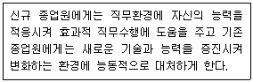
- 인사이동
- 보상관리
- 교육훈련
- 경력개발
(정답률: 60%)
64. 콜센터 매니저의 역할과 가장 거리가 먼 것은?
- 고객리스트 수집 및 평가
- 마케팅 목표 일정, 예산수립 및 관리
- 텔레마케터의 사생활 관리
- 업무절차의 개발 및 마케팅 캠페인
(정답률: 71%)
65. 교육훈련의 전달방법을 결정하는 요인과 가장 거리가 먼 것은?
- 비용
- 학습내용
- 학습자의 선호도
- 교육프로그램 개발자의 수준
(정답률: 61%)
66. 원활한 텔레마케팅의 전개에 꼭 필요한 구성요소로 가장 거리가 먼 것은?
- 텔레마케터
- 웹마스터
- 컴퓨터시스템
- 스크립트
(정답률: 67%)
67. 텔레마케팅 도입시 예산편성에 고려하여야 할 사항과 가장 거리가 먼 것은?
- 인건비
- 컴퓨터 구입비
- 광고, 홍보 관련 비용
- 상담원 등록금 비용
(정답률: 48%)
68. 다음 중 콜센터의 인적자원 관리 방안으로 적합하지 않은 것은?
- 동기부여 프로그램
- 콜센터 리더 육성 프로그램
- 상담원 수준별 교육훈련 프로그램
- 상담원의 안정을 위한 고정급의 급여체계
(정답률: 52%)
69. 다음 교육훈련과정개발을 위한 교수모형설계의 5단계 중 ( ) 안에 들어갈 가장 알맞은 것은?
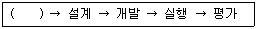
- 전략
- 분석
- 목표설정
- 피드백
(정답률: 48%)
70. 고객의 응대사항 및 통화내용, 응대결과 등을 정확히 기록 유지하는 일종의 통화기록노트라고 하는 것은?
- 스크립트
- 데이터 시트
- 질의와 응답서
- 컴퓨터와 텔레마케팅의 도구 및 장비
(정답률: 50%)
71. 다음 중 인바운드 콜과 아웃바운드 콜을 혼용해서 처리하는 업무형태는?
- 블랜딩(Blending)
- 전화흐름(Call Flow)
- 업무량(Workload)
- 모니터링(Monitoring)
(정답률: 63%)
72. 리더십의 유형을 의사결정방식과 태도에 따라 구분할 때 태도에 따른 유형에 해당하는 것은?
- 민주형 리더십
- 독재형 리더십
- 자유방임형 리더십
- 인간관계 중심형 리더십
(정답률: 48%)
73. 다음 중 보상을 통한 동기부여 방안으로 옳지 않은 것은?
- 급여 차등지급
- 유급 휴가 및 조기 퇴근 등 복무규정의 차등
- 근태 불량자 중점 관리
- 진급 우선 혜택
(정답률: 66%)
74. 콜센터 조직의 특성 중 콜센터만의 독특한 조직문화가 아닌 것은?
- 상담원은 비정규직, 관리자는 정규직인 경우가 많다.
- 파견근무에 따라 상담원들의 소속감 결여가 많다.
- 직업에 대한 만족도에 따라 상담원 개인별 편차가 심하다.
- 대부분의 콜센터의 근로 조건은 평준화되어 있다.
(정답률: 50%)
75. 텔레마케터의 잦은 이직이 콜센터운영에 미치는 요인과 가장 거리가 먼 것은?
- 채용공고와 채용과정에서의 비용 발생
- 질적인 부분의 증대효과
- 기존인력을 대체한 신입인력의 생산성 감소
- 신입인력 교육기간 동안의 수입 감소
(정답률: 60%)
4과목: 고객응대
76. 소비자의 구매과정 중 구매 전 단계에서의 커뮤니케이션 목표와 가장 거리가 먼 것은?
- 구매위험의 감소
- 상표인지의 증대
- 반복구매행동의 증대
- 구매 가능성의 증대
(정답률: 56%)
77. 표현적인(Expressive) 유형의 고객 상담 전략과 가장 거리가 먼 것은?
- 고객의 생각을 인정하면서 긍정적인 피드백을 준다.
- 고객의 이야기만을 경청하고, 상담자 본인의 이야기는 전혀 하지 않는다.
- 제품이나 서비스가 어떻게 고객의 목표나 요구를 충족시켜 줄 수 있는지 설명한다.
- 의사결정을 촉진할 적정수준의 인센티브를 제공한다.
(정답률: 61%)
78. CRM을 위한 고객 로열티 제공과 관계가 가장 먼 것은?
- 단골고객 프로그램
- 영업 자동화시스템
- 유통업체 포인트 카드
- 통신사 멤버십 카드
(정답률: 67%)
79. 효과적인 질문을 하기 위한 방법과 가장 거리가 먼 것은?
- 질문의 목적을 미리 숙지한다.
- 질문의 이유를 설명한다.
- 질문할 내용과 순서를 미리 준비한다.
- 질문 보다는 상품설명을 자세히 한다.
(정답률: 63%)
80. 고객 불만(Complain)의 긍정적인 측면과 가장 거리가 먼 것은?
- 자사 상품(서비스)을 평가하는 유용한 자료로 활용한다.
- 고객의 생활수준을 평가하는 유용한 자료로 활용한다.
- 고객으로부터 상품에 대한 중요한 정보를 수집한다.
- 신속한 불만 처리로 회사의 이미지를 상승시킨다.
(정답률: 58%)
81. 서비스 평가의 측정요소가 아닌 것은?
- 신뢰성
- 응대성
- 확신성
- 허구성
(정답률: 60%)
82. 관계마케팅 전략 개발을 위한 요소와 그에 대한 설명으로 틀린 것은?
- 제품 - 동일한 제품을 가지고 새로운 고객을 찾는 전략이 필요하다.
- 종업원 - 종업원들에 대한 적극적인 인적관리가 필요하다.
- 고객 - 모든 고객을 대상으로 관계구축을 하는 것보다 고객 충성도가 높은 고객을 대상으로 한다.
- 측정 - 측정내용을 계량화하여 정확한 마케팅 효과를 측정할 수 있게 한다.
(정답률: 34%)
83. 텔레마케팅을 통한 고객응대의 특성에 대한 설명으로 틀린 것은?
- 상대방의 얼굴을 볼 수 없어 청각에 절대적으로 의존하게 되므로 더욱 세심한 주의가 요구된다.
- 상담시에는 텔레마케터와 고객 모두 통화 내용에만 집중하므로 다른 소음 등의 전달여부에는 별도의 주의가 필요 없다.
- 고객은 시간과 장소를 가리지 않고 전화를 함으로 언제든지 이를 수용할 수 있는 자세를 갖추어야 한다.
- 고객의 시간과 경비를 배려하기 위해 정확하고 간결하게 정보를 전달한다.
(정답률: 68%)
84. 고객 측면에서 상담이 필요한 이유가 아닌 것은?
- 소비생활 전반에 대한 의사결정이 어렵기 때문에 필요하다.
- 상품판매를 극대화하여 기업의 이윤을 추구하고, 고객만족경영을 추구하기 위해 필요하다.
- 소비시장의 거대화 및 복잡화 현상에 따른 구매지식이 부족하기 때문에 필요하다.
- 상품에 대한 불만이 발생하였을 때 해결방안에 대해 도움을 주기 때문에 필요하다.
(정답률: 60%)
85. 고객관계발전의 단계 중 ‘관계탐색단계’에 해당하는 것은?
- 고객과 종업원의 충성도가 형성되는 단계이다.
- 시험적으로 잠재적인 교환의 상대를 찾는 단계이다.
- 종업원이 고객을 인식하거나 고객이 종업원을 적당한 교환상대로 인식한다.
- 관계의 각 당사자가 상대방의 역할 수행과 그 결과에 만족하여 기존의 관계가 확대되고 거래가 발전하는 단계이다.
(정답률: 24%)
86. 기업이 고객과 직 ㆍ 간접적으로 접촉하는 모든 채널과 방법들을 유기적으로 연관시키는 CRM의 형태는?
- 기능적 CRM
- 고객접점 통합 CRM
- 전략적 CRM
- 운영적 CRM
(정답률: 39%)
87. 성공적인 CRM 적용을 위한 고려사항이 아닌 것은?
- 고객을 중심으로 거래 데이터가 통합되어야 한다.
- 고객 분석을 위한 고객의 상세정보가 수집되어야 한다.
- 고객 분석 결과를 활용할 수 있도록 제반 업무절차가 정립되고 시행되어야 한다.
- 고객 분석 결과를 마케팅에 활용하기 위해 보유상품 및 서비스에 대한 기준을 상담원에게 일임시켜야 한다.
(정답률: 59%)
88. 상담자가 상담 초기에 파악해야 하는 고객의 기본적 상담자료와 가장 거리가 먼 것은?
- 고객 인적사항
- 이전 상담 경험
- 상담 목적
- 상담 후 고객만족도
(정답률: 58%)
89. CRM(Customer Relationship Management)에 대한 설명으로 틀린 것은?
- CRM은 고객과의 관계 관리에 기반하는 고객 중심적, 고객 지향적 경영방식이다.
- CRM은 고객의 생에 전체에 걸친 장기적이고 지속적인 이윤을 추구하는 동적인 경영방식이다.
- CRM은 고객 관계 관리를 위해 사용되는 고객 데이터 분석 등에 정보기술을 효율적으로 활용한다.
- CRM은 고객과의 직접적인 접촉을 통해 한 방향 커뮤니케이션을 지속함으로써 고객과의 관계를 강화시킨다.
(정답률: 54%)
90. 고객과의 효과적이고 성공적인 커뮤니케이션을 위해 전달자의 장애요인 개선을 위한 사항으로 틀린 것은?
- 분명하고 적절한 언어를 사용한다.
- 병행경로와 반복을 이용한다.
- 전달자의 입장에서 사고한다.
- 물리적 환경을 효과적으로 활용한다.
(정답률: 46%)
91. CRM의 등장 배경이 되는 마케팅 패러다임의 변화로 틀린 것은?
- 생산자 중심에서 고객중심으로의 변화
- One-to-one 마케팅에서 Mass 마케팅으로의 변화
- 양적 사고에서 질적 사고로의 변화
- 10인 1색에서 1인 10색으로의 변화
(정답률: 54%)
92. CRM에서 마케팅 성과측정 지표인 고객점유율에 관한 설명으로 거리가 가장 먼 것은?
- 고객관리를 통하여 이루어지 기업제품의 구입 빈도를 의미한다.
- 한 고객의 구입금액이 기업의 매출에서 차지하는 비율을 말하는 범위중심의 척도이다.
- 고객 속의 집중도로서 의미가 있다.
- 시장점유율과 동일한 의미이다.
(정답률: 53%)
93. 고객 문의에 대한 해결방법으로 가장 적합한 것은?
- 고객보다는 회사의 입장과 나를 먼저 생각한다.
- 시간을 끌어 고객이 포기하도록 한다.
- 정확한 고객요구를 먼저 파악한다.
- 사내 규정만을 고객에게 정확하게 전달한다.
(정답률: 68%)
94. 다음 ( ) 안에 들어갈 알맞은 것은?
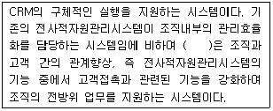
- 분석 CRM
- 운영 CRM
- 협업 CRM
- e-CRM
(정답률: 57%)
95. 텔레마케터의 ‘말하기 기법’에 관한 설명으로 가장 적합한 것은?
- 텔레마케터의 전문성을 드러낼 수 있는 전문용어를 사용하여 고객의 신뢰를 구축한다.
- 고객의 요구사항을 받아들이지 못할 경우, 단호하게 “안 됩니다.”라고 말하도록 한다.
- 상담사보다 나이가 어린 소비자일 경우, 친근감을 더하기 위해 경어를 쓰지 않는다.
- 상담사는 소비자와 말하는 속도를 맞추는 것이 중요하며, 가능한 한 천천히 말하도록 한다.
(정답률: 60%)
96. 고객이 가지고 있는 경계심과 망설임을 없애는 방법과 가장 거리가 먼 것은?
- 고객에게 객관적인 자료를 제시한다.
- 고객에게 타사와의 비교분석에 대해 설명한다.
- 고객에게 업무중심의 고객응대를 한다.
- 고객의 자발적인 참여를 유도한다.
(정답률: 54%)
97. 고객가치 측정 기법이 아닌 것은?
- 고객생애가치
- 고객점유율
- RFM 분석
- 품목점유율
(정답률: 63%)
98. 다음 중 메시지의 성격이 다른 하나는?
- 자세
- 음성
- 눈짓
- 편지
(정답률: 52%)
99. 소비자의 욕구가 다양해지고 기업 간의 경쟁이 치열하기 때문에 고객만족 경영이 필수적이 되었다. 이러한 경영환경의 변화에 관한 설명으로 틀린 것은?
- 산업화 사회에서 정보화 사회로 변하였다.
- 소비자 요구가 소유 개념에서 개성 개념으로 변하였다.
- 시장의 중심이 소비자에서 생산자로 변하였다.
- 규모의 경제에 따른 경쟁에서 부가가치로 변하였다.
(정답률: 57%)
100. 우유부단한 고객에 대한 상담기술을 설명하는 것으로 적합하지 않은 것은?
- 적극적으로 고객의 말을 들어주는 시간만을 가지는 것이 중요하다.
- 개방형 질문을 통하여 그들이 원하는 것이 무엇인지 적절히 표현할 수 있도록 도와준다.
- 적절한 아이디어를 제공해 줌으로써 고객이 의사결정 하는 데 도움을 준다.
- 의사결정을 강화시킬 수 있는 다른 대안들을 설명해 주고, 적절한 보상기준도 설명하여 문제해결에 대한 신뢰를 가지도록 해준다.
(정답률: 52%)